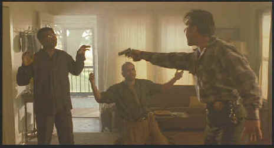

Columbia Tristar/1991/106m/ANA 1.85
The combination of characters is fascinating. The cold, frightening intelligence Pluto. The explosiveness of Ray Malcolm. Then there's Fantasia who's lackluster enthusiasm for the crime and cleanup emphasizes the nature of her partners in crime. Add in an enthusiastic Southern sheriff dreaming of a chance to make it to the big city as a cop and One False Move really takes off.
The details of small town Southern life that are woven into the fabric of a tense action movie bring an unusual depth to what might otherwise be simply a genre film. Think about the rather pathetic ambitions of Sheriff Dale "Hurricane" Dixon. Ponder Fantasia's roots. Would she be in her predicament if it weren't for Dixon?
 |
©Columbia Tristar |
Danger lurks in the
shadows of every scene. There's danger in the woods, danger in the convenience store,
danger at the safe house. The tension is strung out like a wire from one tightly wound end
of the movie to the other.
This was director Carl Franklin's breakthrough film after a stint
at "Corman U" making several films that went straight to video or straight to
Latin America.. Franklin has a great sense of where to put the camera. He uses camera
movements like a pair of eyes surveying his film landscape. And this film is cut close to
the bone leaving the sweetest meat in tact.
Franklin, whose experience as an actor in front of the camera
pays dividends in eliciting on target work from his principals. Bill Paxton combines
innocence, tenacity and stupidly to make his role as sheriff Dixon work to perfection. His
cracker sheriff amongst the screen's best and this from a pool of performances richly
endowed with colorful possibilities. Billy Bob Thornton is loony tunes as the
unpredictable Ray Malcolm. Thornton, co-writer of One False Move with Tom Epperson,
understands this character well. Michael Beach gives a frightening performance as Pluto
and Cynda Williams is likewise convincing as Fantasia.
Transparently beautiful, this DVD delivers the film on a platform
worthy of the material. You probably have never seen One False Move looking this
good. The chromatic desaturated palette of Franklin might look uncomfortably muddy in a
lesser transfer, but every iota of dynamic range is extracted to bring this dark story to
life. Images are consistently sharp in virtually every circumstance. Even the two channel
Dolby Digital sound adds to dangerous ambiance. Carl Franklin adds a fine audio commentary
with open and honest remarks concerning his filmmaking breakthrough. There are also a
couple of theatrical trailers included. What with Devil
in a Blue Dress and One True Thing
recently released on DVD, viewers are being treated to a veritable mini Carl Franklin
festival.